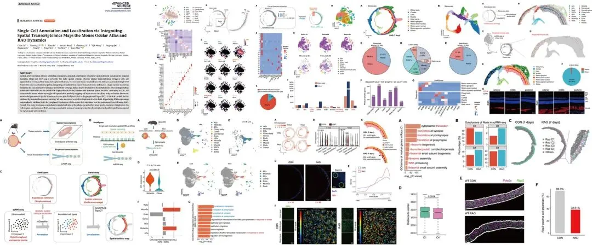
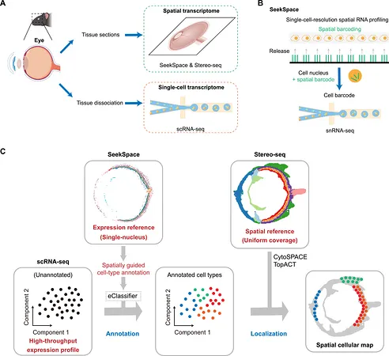
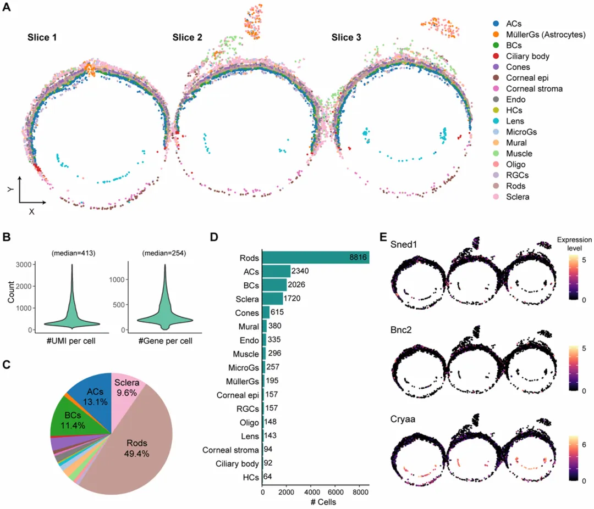
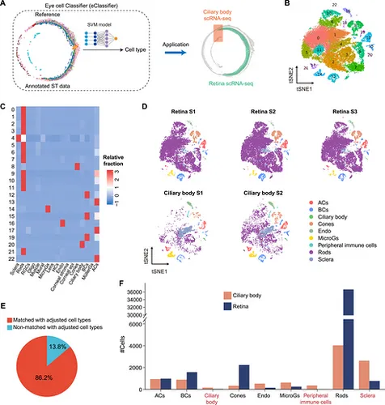
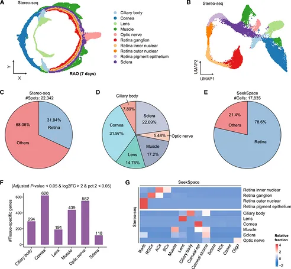
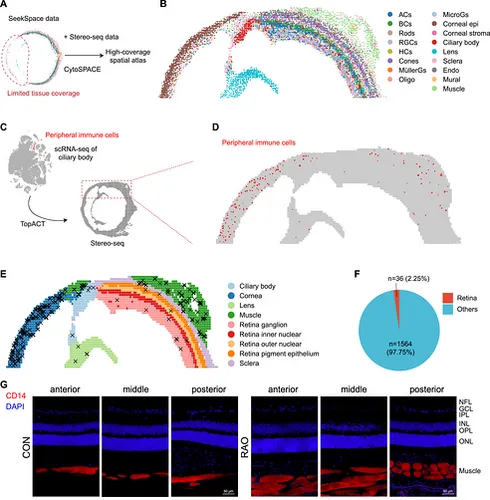
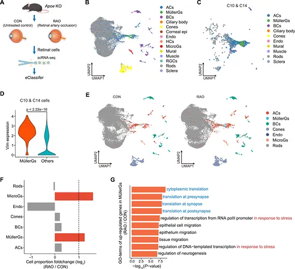
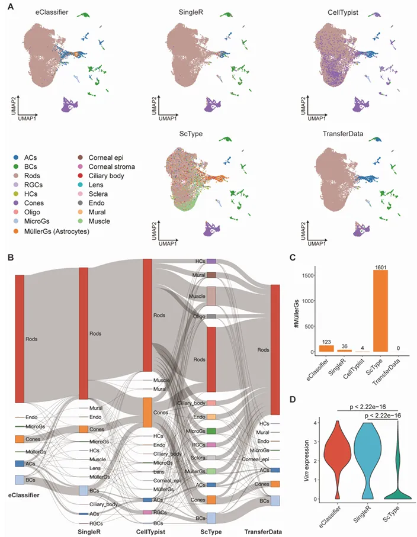
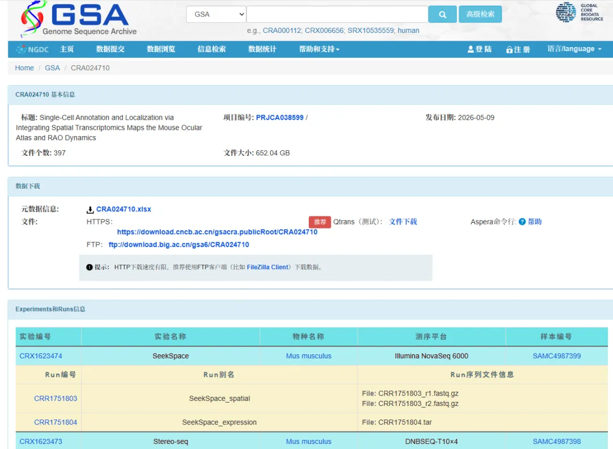
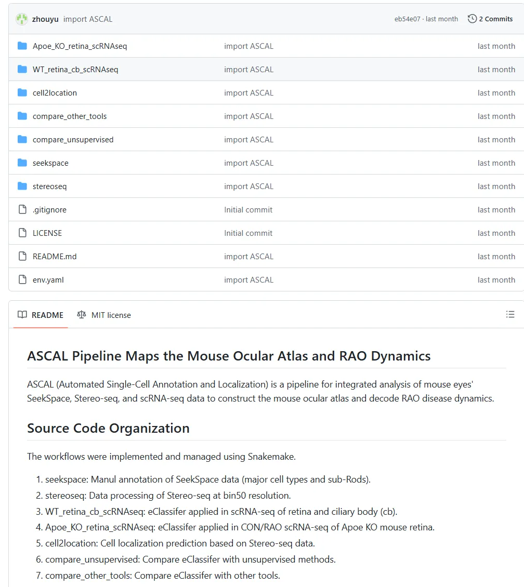

空间图谱+注释工具= 《ADVANCED SCIENCE》
原文：https://mp.weixin.qq.com/s?__biz=MzAwMzIzOTk5OQ==&mid=2247538743&idx=1&sn=2f57df89c83fbaa8ae3fcb1761b3c341&chksm=9b3c2167ac4ba8713a1c8db3c38fd6faca1cca3fad551ebcfaffa22f095743bf5dd0027c667f#rd 合集：文献速递
一、写在前面
六一新鲜发表的一篇《AS》，与一般的图谱类文章不同，本文的生物学意义立足于视网膜动脉阻塞（RAO），以我们教学过的SeekSpace和Stereo-seq为测试数据，开发了ASCAL（Automated Single-Cell Annotation and Localization）并构建了一个小鼠全眼单细胞空间图谱，精确绘制睫状体和视网膜上的细胞类型。关键结论：RAO模型中神经节细胞层（GCL）中显著的空间免疫激活，并通过免疫荧光染色进一步验证。

** **
单细胞缺乏空间信息；空转，emm，我们以前也吐槽过（ Cell bin都是谁在用啊？），当前的ST方法，尤其是高分辨率平台，常依赖计算图像切割，面临细胞边界识别不准确、多细胞转录本的错误捕获、每个斑点转录本数量低，以及基因检测稀疏等重大挑战。为了发挥scRNA-seq和ST的优势，作者开发的ASCAL通过将已知标记基因表达与来自SeekSpace（无图像分割、真正的单核空间转录组平台）的细胞解剖定位整合，构建了一个高置信度参考图谱集（图1A，B）。该图谱作为标准化参考，支持对源组织的scRNA-seq数据集进行稳健且无偏的自动注释。此外，ASCAL采用高组织覆盖率的立体测序数据，并利用CytoSPACE和TopACT算法，在单细胞数据集中实现主要和稀有细胞类型的精确空间映射并且与stereo-seq验证结果一直。通过整合高通量单细胞数据，这一创新方法有效解决了低细胞通量限制，从而提升了空间转录组分析的整体质量和可靠性。SeekSpace也是我们的老熟人了，感兴趣的同学可以参考： 空转技术SeekSpace V2焕新上线，来领分析手册！我们还给大家组建了技术交流群，感兴趣的同学可以联系[Biomamba_zhushou]添加。

Figure 1** **
文章信息：
Du C, Li Y, Li Z, et al. Single-Cell Annotation and Localization via Integrating Spatial Transcriptomics Maps the Mouse Ocular Atlas and RAO Dynamics. Adv Sci (Weinh). 2026 Jun 1:e75857.
** **
如果需要 单细胞数据分析教学、生信热点全文复现、自测数据个性化分析辅导、实验科研服务和常态化实验学习，欢迎联系客服微信[Biomamba_zhushou]。
二、主要结果
1、SeekSpace细胞可注释性max
作者对三个冷冻小鼠眼切片进行了SeekSpace空间转录组学（图1A，B），生成了包含17,835个细胞的单细胞分辨率图。至于为什么选择SeekSpace，作者也指出该平台利用微流控条码平台在空间条码后物理区分单核，从而消除了对解卷积算法或基于图像的单元分割的需求。此外，通过采用单核测序技术，SeekSpace有助于识别更广泛的细胞类型，包括长轴突细胞。将细胞映射回其空间坐标，有效重建眼睛的解剖形态，同时保留其结构组织（见图S1A）。最终，所得数据集显示每细胞UMI中位数为413个，基因中位数为254个（见图S1B），证明了其在捕捉空间分辨细胞转录组谱方面的有效性。

Figure S1 作者在划分的37个无监督聚类中最终注释出6个视网膜簇、3个胶质簇及8个其他簇（图2A）。AC和BC突触层，以及角膜基质-上皮模块在空间富集中的共定位，证实了转录组聚类准确重建了眼睛的解剖层（图2C）。 2、利用sc数据制作细胞类型自动分类器利用公开单细胞数据(GSE178667)和作者自己构建的支持向量机模型构建的眼细胞分类器(eClassifier)，结果表明eClassifier对外周免疫细胞、睫状体、巩膜、视网膜的标志基因与marker均符合成熟的组织特异性解剖特征(Figure 3)，具有分类准确性(与交叉验证方法保持86%的一致性)。
Figure 33、使用stereo-seq作为空间参考的整个小鼠眼睛结构综合转录组图谱
虽然SeekSpace平台实现了空间转录组分析的单细胞分辨率，但低温切割质量和细胞核完整性的限制导致细胞捕捉效率不理想。作者测了四个鼠标眼部切片的stereo-seq。首先，每个bin50斑点检测到的中位数为2,551个UMI和770个基因）。对bin50立体序列数据的聚类分析显示了解剖学上相符的空间域，视网膜结构分为四个不同的层（神经节层、内核层、外核层和色素上皮层）（图4A，图S3B），在嵌入空间中展现出连续体。
与SeekSpace相比，Stereo-seq的黑点空间分布更为均匀，68%的黑点局限于非视网膜区域（见图4C）。这些非视网膜斑点在角膜和巩膜中表现为主要分布（见图4D）。相比之下，SeekSpace仅检测到21%的非视网膜细胞（见图4E）。这种增强的覆盖使立体序列成为全面眼部空间图谱构建的关键补充，尤其是在非视网膜区域。此外，Stereo-seq使得识别这些非视网膜区域的组织特异性基因成为可能（图4F），其功能注释与其对应解剖结构的生理角色相符（见图S3C）。
为了解析 Stereo-seq bin50 点内的细胞异质性，作者以SeekSpace注释的细胞类型为参考进行了反卷积分析。每个斑点都标注了其主要细胞类型，表现出高组织特异性（见图S4）。视网膜斑点主要分为杆状体、RGC、AC和BCs，而非视网膜区域的斑点则准确定位到对应的基质和免疫群体（见图4G）。该空间索引验证了两种不同空间转录组平台之间的一致性。

Figure 4
4、stereo-seq的空间映射
为解决SeekSpace组织覆盖率低的问题，即某些区域细胞检测稀疏或缺失，作者应用CytoSPACE将SeekSpace衍生的细胞类型对齐到stereo-seq（见图5A），展示了细胞类型的精确解剖对应（图5B，图S5A）。TopACT结果显示，外周免疫细胞、视网膜区域、眼外肌、结缔组织等细胞分布与视网膜血屏障的生理特性一致，证实了Stereo-seq作为空间分辨细胞注释参考的可靠性。

Figure 5
此后，作者将eClassifier应在Apoe KO、UPOAO模型中，在细胞分类、胶质细胞群分布、Vim基因检出、细微转录或异质性群体上展现出出色性能(图6)。利用相同数据集在与SingleR、CellTypist、ScType和TransferData等方法相比之下，eClassifier实现了更优的全局准确率，而其他方法则表现出明显的分配偏差与不稳定性（图S8B），如CellTypist错误分类主要神经元群体，ScType引入非视网膜噪声（图S8A）。

Figure 6
Figure S8三、最后聊聊
作者结合了SeekSpace(单细胞核)与stereo-seq(基于square bin)两种技术，开发了可基于多尺度策略(单细胞核和分bin)细胞注释并捕获细微转录特征的ASCAL。本文展示出的能力也较为综合，这部分数据同时能够在识别位于GCL的RAO诱导的免疫激活、Rod亚群的拓扑学分布、由RAO诱导的杆状细胞内状态依赖性脆弱性等生物学问题的挖掘上提供充分的高质量数据。本文的scRNA与空间组学数据编号为CRA024710：
https://ngdc.cncb.ac.cn/gsa/browse/CRA024710

感兴趣的同学可以学习一下本文的分析流程：https://github.com/zhouyulab/ASCAL


如何联系我们

 留一个领取资料、开箱即用的单细胞分析镜像的微信号[Biomamba_zhushou]，方便各位随时交流。同时我们也构建了交流群矩阵，欢迎大家入群讨论。
大家可以阅读完这几篇之后添加给生信入门初学者的小贴士
如何搜索公众号过往发布内容
留一个领取资料、开箱即用的单细胞分析镜像的微信号[Biomamba_zhushou]，方便各位随时交流。同时我们也构建了交流群矩阵，欢迎大家入群讨论。
大家可以阅读完这几篇之后添加给生信入门初学者的小贴士
如何搜索公众号过往发布内容
已有生信基地联系方式的同学无需重复添加

 您点的每个赞和在看，我都认真当成了喜欢
您点的每个赞和在看，我都认真当成了喜欢